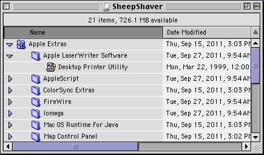
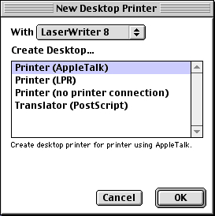
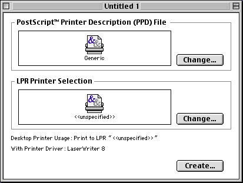
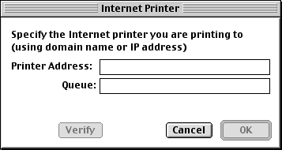
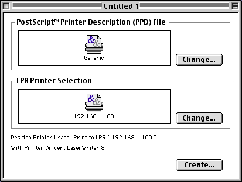

I have used following steps to install MacOS 8.6 on SheepShaver on MacOS 10.6, 10.7, and 10.9 (Intel).
$HOME/.sheepshaver_nvram.Download the latest Universal Binary Build of SheepShaver: [2]
http://www.xs4all.nl/~ronaldpr/sheepshaverforum/SheepShaver_UB_20140201.zip
Mount a MacOS 8.5 CD and copy the MacOS ROM located in the System Folder of the MacOS 8.5 CD to the SheepShaver Folder. The path for the
Mac OS ROM file should be:
/Volumes/Mac\ OS\ 8.5/System\ Folder/Mac\ OS\ ROM
It is probably better to create a HFS volume instead of a HFS+ volume for SheepShaver's main hard drive because some self-mounting images (.smi) will not mount on HFS+ volumes. Alternatively, one can make a small HFS volume on which to copy such images.
To make SheepShaver's volume more Time Machine friendly, it may be best to create a sparse bundle and copy SheepShaver's volume to the sparse bundle.[4]
It may be necessary to enable the "Ignore Illegal Memory Accesses" option in SheepShaver's preferences in order to play games such as Star Trek 25th Anniversary or Star Trek Judgment Rights. It may also be necessary to disable the "Allow Emulated CPU to Idle" option in SheepShaver's preferences in order to play games such as Master of Orion II. [5]
Download and install the MacOS 8.6 Update:
http://support.apple.com/downloads/DL1259/en_US/Mac_OS_8.6_Update.smi.bin
Download and install Carbon Lib 1.6:
http://download.info.apple.com/Apple_Support_Area/Apple_Software_Updates/English-North_American/Macintosh/System/Other_System/CarbonLib_1.6.smi.bin
Download and install the Font Manager Update 1.0:
http://download.info.apple.com/Apple_Support_Area/Apple_Software_Updates/English-North_American/Macintosh/System/Other_System/Font_Manager_Update_1.0.smi.bin
Download and install QuickTime 4.1.2:
[6]
http://support.apple.com/kb/DL1134
(Optional) Sometimes, after installing MacOS, when clicking on particular files, an error message stating that MacOS "Could to find a translation extension with appropriate translators" may appear. To fix this error, follow the instructions in Apple's Mac OS: "Could Not Find a Translation Extension" Message technical note. To delete the Desktop files, as mentioned in the preceding technical note, follow the instructions in Apple's Mac OS: Rebuilding Desktop File and icon recovery technical note. While Apple recommends restarting while holding down Option-Command to rebuild the Desktop files, generally I prefer to delete the Desktop files using Trash Desktop 1.3.1 and then restarting.
Launch the Desktop Printer Utility, which should be located in the "Apple Extras:Apple LaserWriter Software" folder of the SheepShaver boot drive.

The "New Desktop Printer" window should appear. If the window does not appear, Select the "New" option from the "File" menu or press Cmd-N to make the "New Desktop Printer" it appear.

Select "LaserWriter 8" and "Printer (LPR)" for the printer type, and click the "OK" button.
In the next dialog, click the "Change..." button in the box entitled "LPR Printer Selection." In the "PostScript™ Printer Description (PPD) File" box, keep the "Generic" setting.

In the next dialog, entitled "Internet Printer," enter the IP address of the printer in the text box labeled "Printer Address." If the printer has a specific queue enter it in the text box labeled "Queue."

Click the "Verify" button to verify that the printer and queue settings work correctly. Then click the "OK" button. The printer's IP address should now appear in the "LPR Printer Selection" box.

Click the "Create..." button to create the printer.
Nice alternate sheep icons are available in Julia Nikolaeva's "The Farm" and "Aries" icon sets:
The Farm: http://www.flameia.com/ipack/farm.sit
Aries: http://www.flameia.com/ipack/aries.sit
I prefer the sheep icon from "The Farm" because it works in Mac OS 8.6 as well as Mac OS X.
Replacement hard drive icons from MacOS 8 and 9 for the default System 7 hard drive icons used by SheepShaver: http://s3.amazonaws.com/macgarden/mac_os_hd_icons.sit
Disk Copy 6.3.3: http://download.info.apple.com/Apple_Support_Area/Apple_Software_Updates/English-North_American/Macintosh/Utilities/Disk_Copy/Disk_Copy_6.3.3.smi.bin
Stuffit Lite 6.5: http://www.info-mac.org/viewtopic.php?f=107&t=1233
Trash Desktop 1.3.1: http://www.info-mac.org/archive_download.php?file=cfg/trash-desktop-131.hqx
Find Stuff 2.0.3: http://www.applefritter.com/files/find-stuff-203.hqx
Joilet File System Extension 2.1b5: [9] http://www.tempel.org/ftp/pub/Mac/JVA%202.1b5.sit
Adaptec UDF Volume Access 1.0.4: http://www.tempel.org/ftp/pub/Mac/outdated/udf-vol-acc-english-1.0.4.sit
Virtual DVD-ROM/CD Utility 1.0d0: http://s3.amazonaws.com/macgarden/VirtualCD_Imager_v1.0d0.sit
PrintToPDF 2.4.5: ftp://ftp.jwwalker.com/PrintToPDF-2.4.5.sit
The Mouse 2B 1.1: [10] http://s3.amazonaws.com/macgarden/themouse2b-11.sit
LiteSwitch 1.0: [11] http://download.system7today.com/liteswitch.hqx
Gravité 2.0.3: http://www.wildbits.com/files/gravite-203.sit
Natural Order: http://www.naturalordersort.org/NaturalOrder.cpt.hqx
Smart Scroll Classic 3.7.3: http://www.marcmoini.com/Smart-Scroll-3.7.3.sit
OpenWith 1.1.1: http://www.applefritter.com/files/open-with-cmm-111.hqx
Software FPU 3.07: http://s3.amazonaws.com/macgarden/SoftwareFPU.img_.sit
Windows 2.1: http://s3.amazonaws.com/macgarden/windows2.1.img_.sit
FinderPop 1.9.2: http://www.fnarr.net/old-finderpop/FinderPop192.sit
ApplWindows 2.0.2: http://s3.amazonaws.com/macgarden/applwindows_folder.sit
IconWrap II 1.2: http://www.mac.org/system/iconwrap/IconWrap_II_1.2.sit.hqx
Classilla 9.3.2: http://classilla.googlecode.com/files/Classilla9.3.2.sit
Internet Explorer 5.1.7: http://web.archive.org/web/20051222035829/http://www.microsoft.com/mac/downloads.aspx?pid=download&location=/mac/DOWNLOAD/IE/ie5_classic.xml&secid=30&ssid=11&flgnosysreq=True
Fetch 3.0.3: http://www.mac.org/internet/fetch/Fetch_3.0.3.sit.hqx
Nifty Telnet SSH 1.1r3: http://www.lysator.liu.se/~jonasw/download/niftytelnet-1.1-ssh-r3.hqx
MacSSH 2.1fc3: http://sourceforge.net/projects/macssh/files/MacSSH%20PPC/2.1fc3/MacSSHPPC-2.1fc3.sit/download
AG Net Tools 1.0: http://s3.amazonaws.com/macgarden/agnettools.sit
OTTool 1.2.1: http://macintoshgarden.org/sites/macintoshgarden.org/files/apps/OTTool_1.2.1.sit
MacGSView 2.0b3: ftp://mirror.cs.wisc.edu/pub/mirrors/ghost/aladdin/gs600/mac/test/MacGSView_2.0b3_Installer.bin
Adobe Acrobat Reader 5.0.5 (English): http://web.archive.org/web/20021202143749/http://download.adobe.com/pub/adobe/acrobatreader/mac/5.x/monolithic/rs505enu.bin
JPEGView 3.3: http://www.aarongiles.com/macsoft/JPEGView3.3.smi.bin
SoundApp 2.4.3: http://www.mac.org/utilities/soundapp/SoundApp_Fat.sit.hqx
BBEdit Lite 6.1.2: http://download.system7today.com/BBEdit_Lite_612.smi.hqx
Full Write Professional 2.0.6: http://www.encyclomedia.ca/fwp/free_fullwrite_files/fullwrite206installer.sit
WordPerfect (both downloads are needed):
http://download.system7today.com/corelwp35e.sea.bin
http://download.system7today.com/wordperfectupdates.img.bin
Quill 2.2: http://macintoshgarden.org/sites/macintoshgarden.org/files/apps/Quill_img.sit
Spell Tools 1.3.3: http://www.tucows.com/download.html?software_id=316079&t=2
ResEdit and Forker:
[12]
ResEdit 2.1.3: http://download.info.apple.com/Apple_Support_Area/Apple_Software_Updates/English-North_American/Macintosh/Utilities/ResEdit_2.1.3.sea.bin
Forker 1.3: http://resexcellence.com/files/forker13.hqx
HexEdit 2.00: http://sourceforge.net/projects/hexedit/files/HexEdit/HexEdit%20v2.00/
ResCompare 2.53: http://www.gryphel.com/c/sw/progtool/rescompr/c/rescompare2.53.sit.hqx
ProcessInfo 1.3.1: http://download.system7today.com/ProcessInfo.sit.hqx
Memory Mapper 1.5: [13] http://hyperarchive.lcs.mit.edu/HyperArchive/Archive/cfg/memmap.hqx
Creator Changer 2.8.4: http://www.gryphel.com/c/sw/sysutils/crtrchng/c/creator-changer-284.hqx
Checksum 1.3: http://www.gryphel.com/c/sw/sysutils/checksum/c/checksum1.3.sit.hqx
Continuum 1.04:
http://www.ski-epic.com/continuum_downloads/Continuum.bin
http://www.ski-epic.com/continuum_downloads/Continuum%20Galaxy
Classic Daleks 1.2: ftp://ftp.lysator.liu.se/pub/mac/games/classicdaleks12.hqx
Odyssey - The Legend of Nemesis: http://www.paranoidproductions.com/odyssey/downloads/OdysseyFreeware.sit.hqx
Rescue! 2.0.5: http://www.traud.de/rescue/files/rescu205.hqx
Burn 2.5: http://www.gryphel.com/c/sw/sysutils/burn/c/burn-25.hqx
Drop•Attribute 1.0.0: http://s3.amazonaws.com/macgarden/dropattribute_1.0.sit
MacShell 0.54b: ftp://ftp.cs.washington.edu/homes/fred/MacShell.0.54b.new.sit.hqx
X-Launch 2.11: http://macintoshgarden.org/sites/macintoshgarden.org/files/apps/x-launch_2.11.bin
Disinfectant 3.7.1: http://www.gryphel.com/c/sw/sysutils/dsnfctnt/c/disinfectant371.sea.hqx
Broadcast Calendar 1.0.1: http://macintoshgarden.org/sites/macintoshgarden.org/files/apps/Broadcast_Calendar_img.sit
[1] For other ways to extra a Mac OS ROM, see SheepShaver v2.2 Installation and User's Guide (Linux), Rom File Extraction How-To.
[2] Ronald P. Regensbrug, SheepShaver Builds for Mac OS X, Links and Downloads, E-Maculation Forums (Nov. 17, 2011); see also Matt Newburg, SheepShaver Brings Classic Mac OS to Snow Leopard, TidBITS (Oct. 23, 2009).
[3] Ronald P. Regensburg, SheepShaver Setup Manual for Mac OS X, E-Maculation (Nov. 20, 2011).
[4] See, e.g., Mark Wheadon, Efficient Backups: Storing VMs in a Sparse Bundle, Wheadon's Words (June 20, 2009).
[5] See Space Cadet, Star Trek Judgment Rights CD, E-Maculation Forums (Oct. 15, 2007); Space Cadet, Adjusting Processor Speed, E-Maculation Forums (May 1, 2012).
[6] QuickTime 4.1.2 is the most recent version of QuickTime that works under SheepShaver. See Peter Holbrook, QuickTime, E-Maculation Forums (May 17, 2008).
[7] See also Ronald P. Regensburg, Printing from SheepShaver and BasiliskII, E-Maculation (Apr. 14, 2012).
[8] Other sources of MacOS software and games include Apple's Older Software Downloads, the Macintosh Garden, Le Grenier du Mac (French), the Info-Mac Archive, mac.org, System7 Today's Software and Games Guides, AppleFritter's 68K Section, the Personal Computer Museum's Mac Software Archive, the Old Mac Archive, Absolutely Mac's Freeware Archive, Giant Mike's Vintage Shareware Collection, the Gryphel Project's Software Archive, the University of Michigan's Macintosh Software Archive, the Highland Historic Computer Museum's Macintosh Disk Images collection, Thomas Tempelmann's Macintosh Page and the Mac Mothership's Applications and Utilities Centers.
[9] See Space Cadet, Multi Disc Games, DVDs, Initialize Disc Fix: TUTORIAL, E-Maculation Forums (Oct. 6, 2007).
[10] See Jim Witte, Right Mousebutton in SheepShaver?, E-Maculation Forums (Aug. 28, 2011).
[11] See Jim Witte, Way to Have Command-Tab Passed to SS?, E-Maculation Forums (Aug. 2, 2011).
[12] See ResExcellence, Download ResEdit. There is an unofficial version of ResEdit 2.1.3 called SuperResEdit that incorporates many additional features, including Forker. See Macintosh Garden, SuperResEdit 2.1.3.
[13] See also Brian Mason, Memory Mapper 1.5 Reviewed, Washington Apple Pi Journal (March/April 2001).
Return to Sriranga's Homepage / Notes
Valid
XHTML [ W3C Validator,
Validome ] and
CSS.